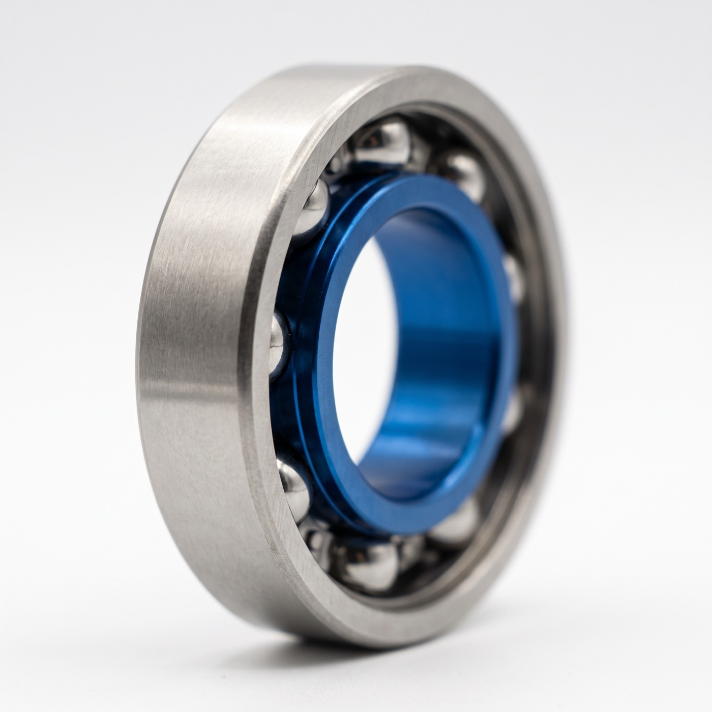
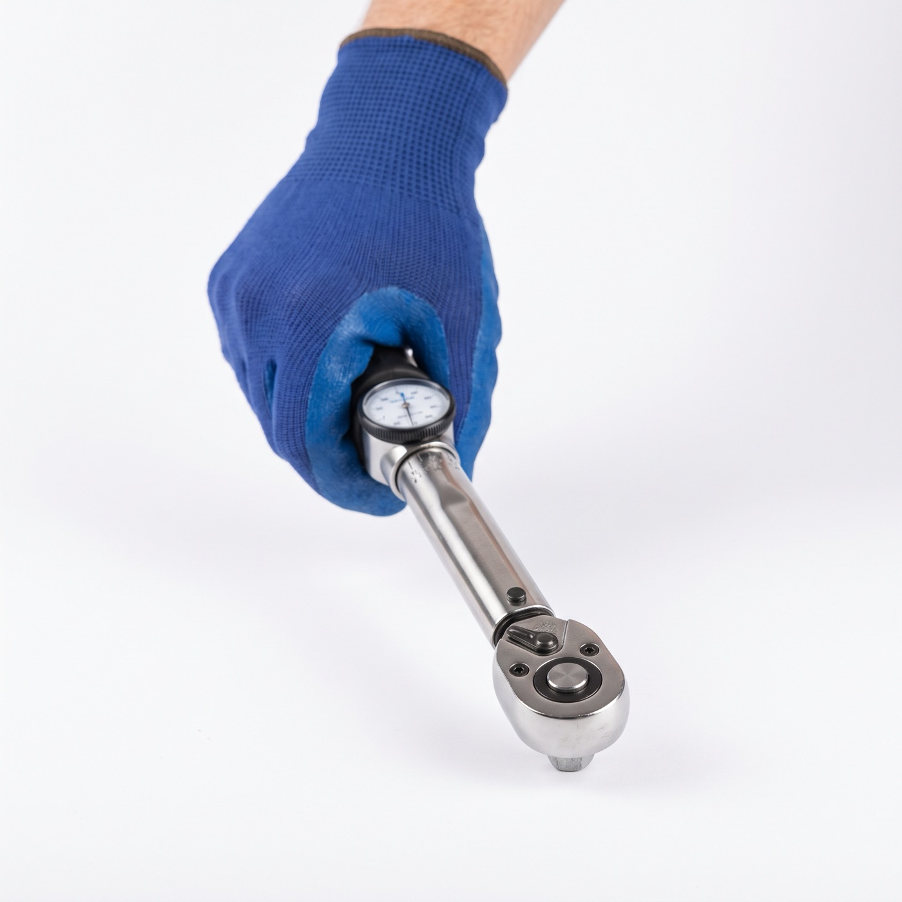
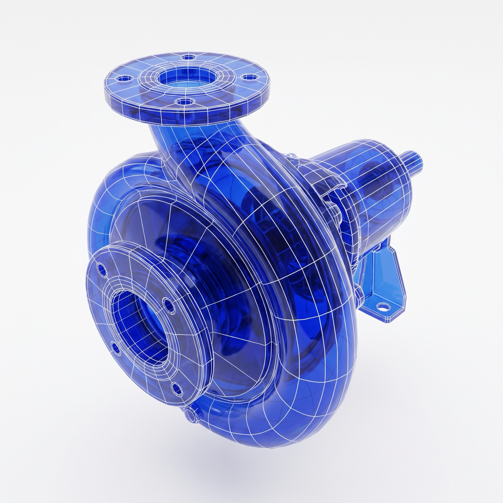
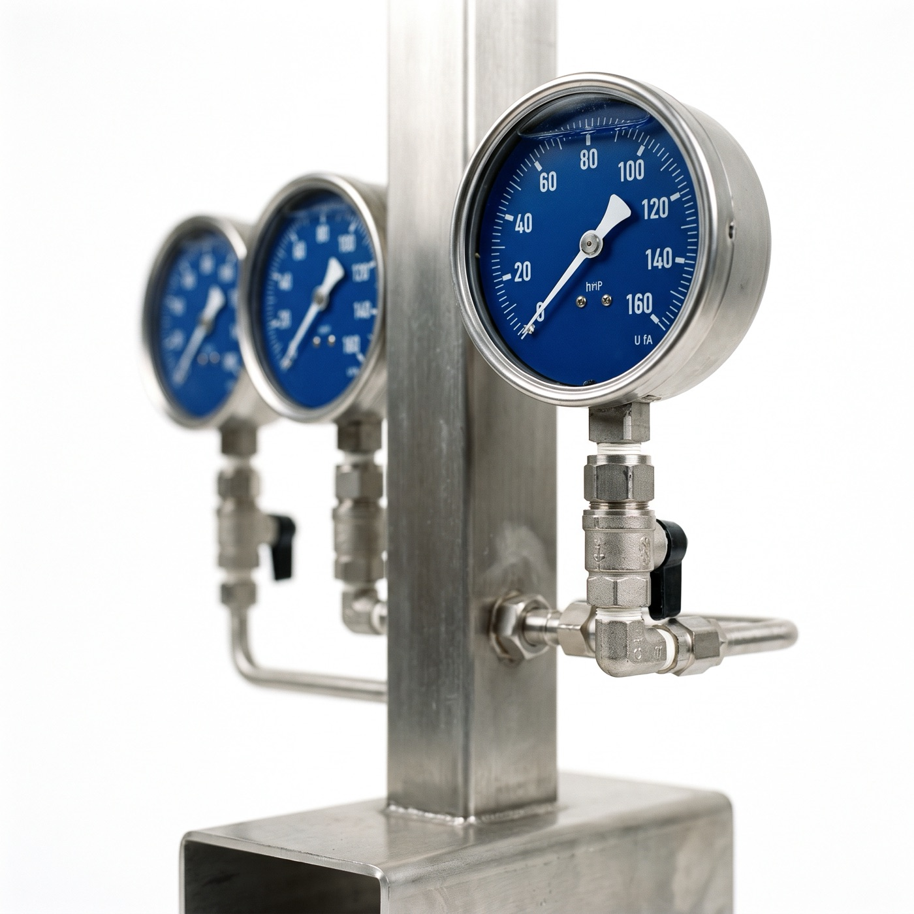
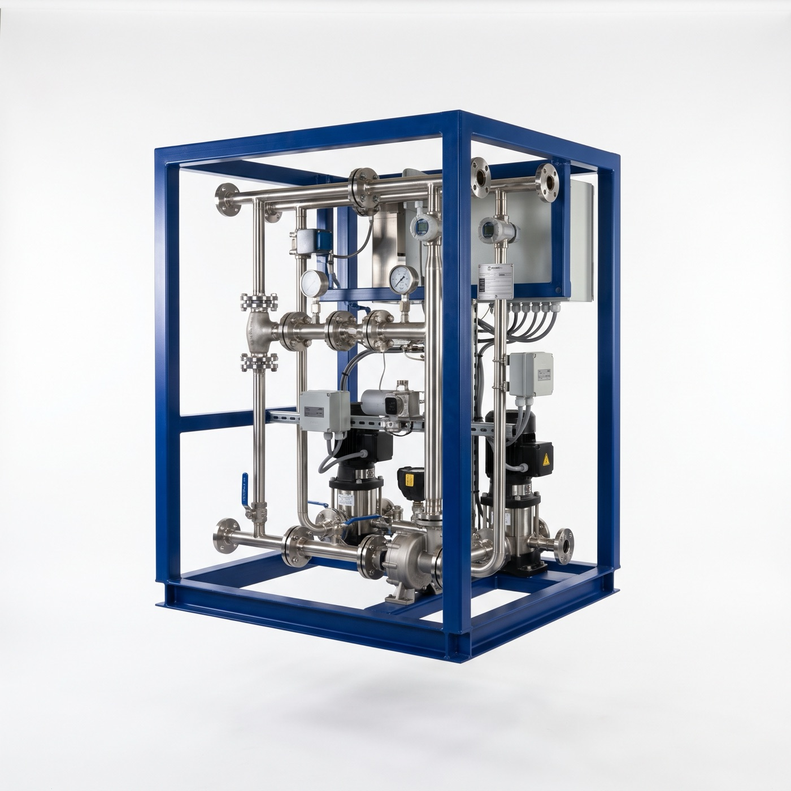
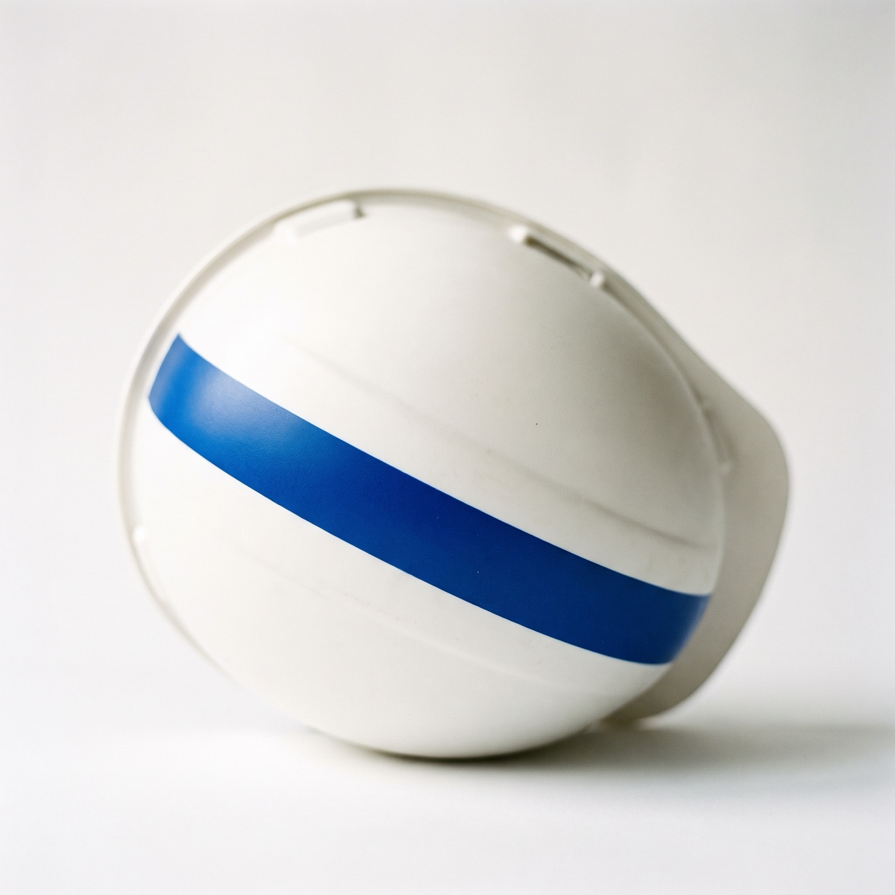

Reliability engineering,
built on your own data.
Maintenance, reliability and spares consultancy from engineers who have run the plant, using AI to do in days what used to take months.
Every discipline.
One integrated team.
Maintenance, reliability, spares, design, asset management, project delivery and HSEQ under one roof, so there are no gaps between disciplines, no lost context and no diluted responsibility.

Reliability management
FMEA, RCM, root cause analysis and Weibull life modelling to understand exactly why assets fail and when, turning reactive firefighting into controlled, predictable operations.
Explore reliability management
Maintenance management
Planned, preventive and corrective strategies with CMMS integration, so every asset is maintained to the right standard at the right time.

Design engineering
Concept to detailed design. P&IDs, CAD, structural and process engineering.

Asset management
Full lifecycle asset planning, risk assessment and compliance assurance that keeps your asset base performing and your obligations met.

Project delivery
End-to-end project management, commissioning, testing and structured handover, delivered on scope, on time and fully documented.

HSEQ
Health, safety, environment and quality built into the engineering: hazard studies, hazardous areas and audit-ready systems.
Most maintenance regimes are inherited. Tasks get added after every incident and nothing ever gets taken away, so crews spend hours on work that prevents nothing. We help operators rebuild their maintenance around how their assets actually fail, using their own P&IDs, O&M manuals and CMMS history. The result is less unplanned downtime, fewer wasted hours and a spares holding you can justify line by line.
Criticality, FMECA and planning that strip your regime back to work that matters.
Find out why assets fail, and catch it before it happens again.
Hold the parts that protect production. Release the cash tied up in the rest.
Concept to detailed design, with maintainability designed in from the start.
Lifecycle, risk and compliance decisions for the assets you already own.
Managed, commissioned and handed over with the maintenance ready on day one.
Shell & Castrol lubricants
& oil analysis
Align Solutions is an authorised supplier of Shell and Castrol lubricants, including Shell Panolin and Shell LubeAnalyst oil analysis. The product choice is made by the same engineers who run your maintenance strategy, so lubrication feeds FMEA, RCM and PM intervals instead of sitting in procurement.
Understanding failure
through data
The Weibull distribution is the foundation of reliability analysis. By fitting failure data to the right model, we identify whether assets are suffering early-life defects, random failures, or wear-out, and respond accordingly. Different failure modes demand different interventions. We find which applies to your assets.
Weibull reliability modelling is central to how Align Solutions identifies failure modes and maintenance strategy.
Where most organisations are.
Where we take you.
Most operations start reactive. The goal is predictive. We map the route and move you through it.
Fix it when it breaks. The default state of most industrial operations.
- High MTTR
- Unpredictable costs
- No failure data captured
- Maintenance driven by breakdown
Schedule maintenance before failure. Evidence-based intervals, not guesswork.
- Reduced unplanned downtime
- Better spares planning
- Known and budgeted OPEX
- Data collection begins
Maintenance happens when the data says so. Maximum uptime, minimum intervention.
- Condition-based decisions
- Failure predicted before it occurs
- No over-maintenance
- Full asset lifecycle visibility
Engineering outcomes
that last
We don't hand over a report and leave. Every engagement ends with practical, implemented change. These are the outcomes clients carry forward.
- Reduced unplanned downtime
- Predictive, condition-based maintenance
- Maintenance man-hours focused on critical tasks
- Informed decisions across asset lifecycle and cost
- Reduced over-maintenance and unnecessary intervention
- Right spare parts, in the right place, at the right time
- Positive cultural change toward data-driven operations
- Maintenance aligned with operational goals
A structured 10-step
reliability programme
Our Full Systems Assessment is the comprehensive entry point for organisations that need to understand their asset base and build a reliability programme from the ground up. Structured. Sequenced. Evidence-led.
See every step in detailReliatic, Digital Reliability Engineer
Align Solutions has partnered with Reliatic to deliver a Digital Reliability Engineer. We combine deep reliability expertise with practical, usable software. We don't analyse your data and walk away. We leave you with tools you continue to use long after we're gone.
Ready to start
your project?
Tell us about your operation and we'll put the right engineers in front of you.
Get In Touch